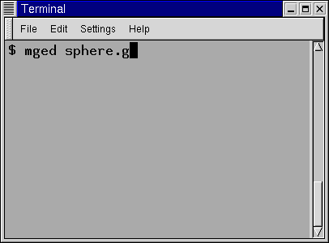
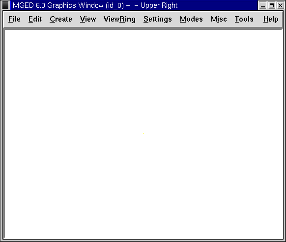

In this lesson, you will:
-
Launch the MGED program.
-
Enter commands at the MGED prompt in the Command Window.
-
Use the MGED Graphical User Interface (GUI).
-
Open or create a new database when launching MGED.
-
Use the GUI to open or create a new database.
-
Title a database.
-
Select a unit of length for your design.
-
Select a primitive shape.
-
Create a primitive shape using the make command.
-
Use the Z command to clear the Graphics Window.
-
Draw a previously created shape using the draw command.
-
Use the erase command to delete an item in the Graphics Window display.
-
Create a sphere using the GUI menu.
-
Use the l command to list a shape’s attributes or parameters.
-
Use the ls command to list the contents of the database.
-
Eliminate a shape or object from the database using the kill command.
-
Edit a command.
-
Use the q or exit commands to quit the program.
Launching the MGED Program
To launch the MGED program, type mged at the Terminal (tty) prompt and then press the ENTER key. This brings up two main windows: the MGED Command Window and the MGED Graphics Window (sometimes called the Geometry Window). Both windows will initially be blank, awaiting input from you. To leave the program at any time, at the Command Line type either the letter q or the word quit and then press the ENTER key.
Entering Commands in the Command Window
You can type in commands at the mged>prompt. Many experienced UNIX users prefer this method because it allows them to quickly create a model (which we sometimes refer to as a "design") without having to point and click on a lot of options. The complete listing of editing commands and what they do can be found in Appendix A.
|
Caution
|
Check all typed entries before you press the ENTER key. If you find you made a mistake, simply press the BACKSPACE key until you have erased over the mistake and then re-type the information. Later you will get more experience editing text using vi and emacs command emulation. |
Using the GUI
Users who are more familiar with Microsoft Windows may prefer to use the GUI pull-down menus at the top of the Command or Graphics Window (they are the same in either window). The menus are divided into logical groupings to help you navigate through the MGED program.
Before you can create a model, you need to open a new database either through the Terminal Window when starting MGED or through the GUI after starting MGED.
Opening or Creating a New Database when Launching MGED
When launching MGED, you can open or create a database at the same time. At the shell prompt (usually a $ or %), in the Terminal Window, type mged followed by a new or existing database name with a .g extension. For example: mged sphere.g[ENTER]

If you are creating a new database, a small dialog box asking if you want to create a new database named sphere.g will appear. Click on Yes, and a new database will be created. If sphere.g already exists, MGED will open the sphere.g database as the program is launched.
Using the GUI to Open or Create a Database
Alternatively, once you have launched MGED, you can open an existing database or create a new database using the GUI menus (at the top of the Command or Graphics Window) by clicking on File and then either Open or New. Both options bring up a small dialog box. The Open dialog box will ask you to type in the name of an existing database. The New dialog box will ask you to type in the name of a new database. Click on OK to accept the database.
For this lesson, create a new database called sphere.g. To do this, type sphere.g at the end of the path name, as shown in the following illustration. Click on OK to accept the database name.


One advantage to using the GUI, if you aren’t familiar with UNIX file management, is that this will show you your current path name, so you will know exactly where your database is going to be located. This can be especially helpful if you have a lot of directories or files to manage.
Assigning a Title to Your Database
You can title your new database to provide an audit trail for you or others who might use your database. After the prompt, in the Command Window, type title followed by a space and a name that reflects the database you are going to make. When you are done, press the ENTER key. For example: mged>title MySphere[ENTER] Note that in BRL-CAD versions prior to release 6.0, the title is limited to 72 characters.
Selecting a Unit of Length
MGED uses millimeters for all internal mathematical processes; however, you can create your design using some other unit, such as feet. For this lesson, inches is used. To select inches, move your mouse pointer to the File menu at the top of the Command Window. Click on File and then Preferences. A new menu will appear. Select Units and then Inches. If you are not a "point-and-click" type of person and prefer a Command Line, then just type units in after the MGED prompt in the Command Window, followed by the ENTER key. The Command Line looks like: mged>units in[ENTER]
Selecting a Primitive Shape
MGED provides a variety of primitive shapes (sometimes referred to as simply shapes or primitives) that you can use to build models. Each type of shape has parameters that define its position, orientation, and size. A listing of these shapes and their respective parameters is given in Appendix C.
|
Note
|
Historically, the word solid was used for what we now refer to as a primitive shape. This older terminology was sometimes difficult for new users to understand. If you see the word solid used in any BRL-CAD programs, documentation, or commands (e.g., in Appendix A), think primitive shape. |
Creating a Sphere from the Command Line
For this lesson, you are going to create a single sphere. There are two ways you can create a primitive shape. You can create all shapes through the Command Window and most shapes through the GUI.
You can easily create a sphere from the prompt in the Command Window by typing just a few commands. At the MGED prompt, type: make sph1.s sph[ENTER] [Note: Use the digit 1, not the letter l]
This command tells the MGED program to:
make |
sph1.s |
sph |
Make a primitive shape |
Name it sph1.s |
Make the shape a sphere |
A default sphere will be created, and a wireframe representation of the primitive shape will appear in the Graphics Window. In Lesson 4, you will give your sphere a solid, three-dimensional look.
This command will draw the primitive shape in the Graphics Window.
Clearing the Graphics Window
To build another object or work on another primitive shape, you can easily clear the Graphics Window through the Command Window. At the Command Line prompt, type an uppercase Z (for zap) followed by ENTER.
|
Note
|
Before using the zap option, make sure you "activate" (i.e., set the focus on) the Command Window. If you type a z and your cursor is still in the Graphics Window, you will send your design spinning. Typing a zero (0) will stop the spin. |
Drawing a Previously Created Object
To recall the sphere, type the command on the Command Line as follows: draw sph1.s[ENTER] This command tells the MGED program to:
draw |
sph1.s |
Draw a previously created primitive shape |
named sph1.s |
Erasing an Item from the Graphics Window
You may occasionally want to erase a particular item from the display in the Graphics Window. You can use the erase command to remove the item without any file operation being performed; the item remains in the database. To delete the sph1.s object from the display, at the Command Window prompt, type: erase sph1.s[ENTER]
Creating a Sphere Using the GUI
Another way to create a sphere is to use the GUI menu system duplicated at the top of the Command and Graphics windows. Clear your Graphics Window by using the previously described Z command. Then, in the Graphics Window, select Create, and a drop-down menu will appear with the various primitive shape types available. Select sph (for sphere) under the Ellipsoids category. This will bring up a dialog box. Click in the empty text box and type sph2.s. Click on Apply or press ENTER. A new sphere will be created and drawn in the Graphics Window. When you create a shape through the GUI, the shape will automatically be in edit mode so that you can change it as needed, and the shape’s parameters-which define its position, orientation, and size-will be in view.
Viewing a Shape’s Parameters
Sometimes when you are making a model, you might want to view a shape’s parameters, such as height, width, or radius, in the Command Window. You can easily list the attributes of a shape by typing the l (for "list") command at the Command Window prompt as follows: *l shape_name[ENTER]*footnote:[Note: The command is the lowercase letter l, NOT the number one.
]
|
Note
|
Note: If you attempt to type in the Command Window and you see no words appearing there, chances are the focus has not been set on that window (i.e., keyboard input is still directed to another window). Depending on your system’s configurations, the focus is set to a window either by moving the cursor into the window or clicking on the window. |
An example of the dialog that might occur in the Command Window for the parameters or attributes of the first sphere you created is as follows:
mged> l sph1.s
sph1.s: ellipsoid (ELL)
V (1, 1, 1)
A (1, 0, 0) mag=1
B (0, 1, 0) mag=1
C (0, 0, 1) mag=1
A direction cosines=(0, 90, 90)
A rotation angle=0, fallback angle=0
B direction cosines=(90, 0, 90)
B rotation angle=90 fallback angle=0
C direction cosines=(90, 90, 0)
C rotation angle=0, fallback angle=90
Don’t be concerned if you notice in the preceding output that MGED stores your sphere as an ellipsoid. In actuality, the sphere is just a special case of the ellipsoid (see Appendix C). Also, note that it is not important if the numbers in your output do not match what is shown in this example.
Use the l command to list both sph1.s and sph2.s before continuing with this lesson.
Listing the Contents of a Database
In addition to viewing a shape’s contents, you might also want to list the contents of the database to see what items have been created. To view the database contents, type at the Command Window prompt: ls[ENTER]
Killing a Shape or Object
Sometimes when creating a model, you may need to eliminate a shape or object from the database. The kill command is used to do this. For example, if you wanted to kill the sph1.s shape, you would type at the Command Window prompt: kill sph1.s[ENTER] Make another sphere through either the Command Window or the GUI and name it sph3.s. Once the sphere is made, use the kill command to eliminate it from the database by typing at the Command Window prompt: kill sph3.s[ENTER] You can tell the shape has been eliminated by using the ls command in the Command Window to list the contents of the database. At the Command Window prompt, type: ls[ENTER] You should see two shapes listed: sph1.s and sph2.s.
|
Note
|
Note: All changes are immediately applied to the database, so there is no "save" or "save as" command. Likewise, there is presently no "undo" command to bring back what you have deleted, so be sure you really want to permanently delete data before using the kill command. |
Editing Commands in the Command Window
Occasionally, when you enter commands in the Command Window, you will make a mistake in typing. MGED can emulate either the emacs or vi syntax for Command Line editing. By default, the emacs syntax is used. See Appendix B for a list of keystrokes, effects, and ways to select between the two command sets.
You can also use the arrow keys to edit commands. The left and right arrow keys move the cursor in the current Command Line. Typing ENTER at any location on the Command Line executes the command. Note that both the BACKSPACE and DELETE keys will delete one character to the left of the cursor.
MGED keeps a history of commands that have been entered. The up and down arrow keys allow you to select a previously executed command for editing and re-execution.
Quitting MGED
Remember, to leave the program at any time, type from the Command Line either the letter q or the word quit and then press the ENTER key. You may also quit the program by selecting Exit from the File menu.
Review
In this lesson, you:
-
Started the MGED program.
-
Entered commands in the Command Window.
-
Used the MGED GUI.
-
Created or opened a database using MGED naming conventions.
-
Used the GUI to create or open a database.
-
Titled a database.
-
Selected a unit of measure for a design.
-
Selected a primitive shape.
-
Created a primitive shape using the make command in the Command Window.
-
Cleared the screen of a design using the Z command.
-
Drew a previously created shape using the draw command.
-
Used the erase command to delete a shape from the Graphics Window display.
-
Used the GUI to create a primitive shape.
-
Used the l command to view a shape’s parameters.
-
Used the ls command to list the contents of the database.
-
Used the kill command to eliminate a shape from the database.
-
Edited commands in the Command Window.
-
Used the q or Exit commands to quit the program.